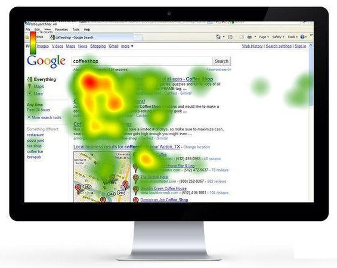
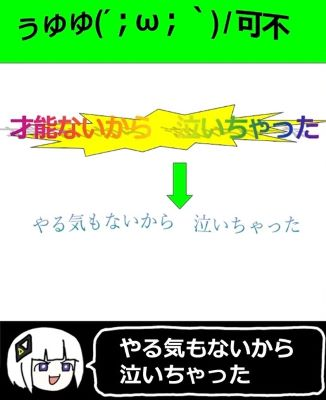

哈喽小伙伴们，国庆节快乐呀🎉
相信各位已经发现网站正在测试的 xxtsoft Moe Design 主题了，它将替代掉原有杂乱且审美过时的仿 Windows Vista 主题（当然我知道有一部分人喜欢旧版主题，目前仍然保留旧版样式切换）在进行视觉体验改造的过程中，我发现一些很有趣的事情，所以想和大家分享一下。
F 型布局被误解了
你大概率见过这么一张图：页面上有一团像字母F的亮斑，配文写着"用户的视线呈 F 型分布，重要内容要放在左上角"。

我一直以为这是设计准则,直到翻到 Nielsen Norman Group 自己的回访文章——距离他们 2006 年提出这个结论，已经过去 11 年。标题里就写着"被误解了，但仍然相关"。
The F-pattern is negative for users and businesses.
Good design can prevent F-shape scanning.
— F-Shaped Pattern of Reading on the Web: Misunderstood, But Still Relevant，Nielsen Norman Group，2017
翻译过来就是：F 型对用户和商家都不利，而且好的设计能防止它出现。
但这tm不是你们自己提出来的吗？
接着往下看这个新报告就懂了。F 型不是一个值得追求的形状，而是一种症状。它只在文字堆成一大片、没有小标题、没有视觉分组的页面上出现。因为页面上一个抓手都没有，眼睛只能退回最省力的策略：横扫一下上面，再横扫一下下一行，然后沿着左边快速滑下去。
所以说，你看到的 F 型，不是用户"喜欢 F 型"，而是你的页面没给用户别的东西看。
我之前还在担心首页顶部区域给了欢迎标语和公告栏，会不会导致用户不把注意力集中在我的产品和文章列表上，但根据这些信息，如果布局合理，用户还是能找到关键内容的。
一个被人们口耳相传十几年的规律，作者本人说它是失败信号。这个反转挺有意思的。
人其实不在"读"
People rarely read Web pages word by word; instead, they scan the page, picking out individual words and sentences.
— How Users Read on the Web，Jakob Nielsen，1997
79% 的测试用户会扫读每一个新打开的页面，只有 16% 会逐字读。这由人的基本行为决定，而不是由技术决定。
因此比起总想着"这段要写得完整"，我们要多想"这行第一个词能不能让人停下"。
"割草机"模式
NN/g 在 2019 年做了第二次大规模研究。这次他们在北京也做了，证明了结果对于中文用户的普遍适用性。
在这次研究里，他们给一个模式正式命名了：lawn-mower（割草机）。原文是这么定义的：
On pages with distinct cells of content, people often process those cells in a lawn-mower pattern: they begin in the top left cell, move to right until the end of the row, then drop down to the next row, move to the left until the end of the row, drop down the next row, and so on.
— How People Read Online: New and Old Findings，Kate Moran，NN/g，2019
它就像割草机在草坪上来回折返（如下图）
细心的小伙伴可能已经发现了：这就是使用新主题的网站首页文章布局！
所以“左上角最重要”的直觉应该变为
- 前几行的权重最高，尤其是第一行
- 每一行的两端比中间更容易被看到因为折返发生在两端
- 行中间那几张，最容易被直接跳过。
这就是为什么把"最新一篇"放在列表第一个位置，而不是放在中间加个高亮，这也符合我们“按时间排序”的直觉。
用户差异？
我一开始以为 F 型和 Z 型是"两种不同的人"。其实不是。有篇文章把它说得很清楚：
They describe different layouts, not different users.
— F-Pattern Reading，Metricuno（行业博客，非研究结论）
同一个读者，读一篇长文时是 F 型（或者说，是被迫 F 型），翻一个卡片站时是割草机，看一个产品页时是 Z 型。形状是页面结构决定的，不是性格决定的。
还有一组反驳数据：有家公司分析了 99 个网站、46 名参与者、一共 157,498 个扫视固定点。他们的原话是：
Out of those 99 websites, we didn't find any individual heat maps that closely resembled an F.
— Eye Tracking Studies: Does the Famous F-shape Pattern Really Exist?，EyeQuant
他们观测到的实际分布是"中间偏左的一坨"，不是什么字母。他们的建议是别把 F 型当金科玉律。我觉得更准确的说法是：F 型是"没有设计"时的默认值，不是设计目标。
留白也是排版手段
格式塔心理学（Gestalt，1920 年代由三位德国心理学家提出）里有一条原则。
Proximity is powerful enough to override similarity of color, shape, etc.
— What are Gestalt principles?，Educative
两个东西放得近，人就会认为它们是一组，哪怕它们颜色形状完全不同；反过来，两个长得一模一样的东西，只要间距拉开，人就不认为它们有关系。
| 做法 | 分组效果 | 代价 |
|---|---|---|
| 把所有元素等距排开 | 看不出谁和谁一组 | - |
| 拉开组间距、收紧组内间距 | 一眼看出分组 | - |
| 用边框把每组框起来 | 直接贴脸开大啊 | 视觉更重 |
三行的元素完全一样，只有间距和边框不同，用户的理解就完全不一样了。所以留白也是一种低成本排版手段（真的低吗，margin 有时加不好就乱了）
显眼是有配额的
我们生物老师特别喜欢跟我们说一句话：“你们这些人都‘好图好色’，所以我往PPT加了很多图片……”当时班上都在笑，都知道他是故意的。不过这句话本身没问题，鲜艳的颜色能防止我们上课睡着，图片能激发听课的兴趣。最重要的是，它能让我们抓到PPT的重点。
但是，如果配色弄不好会出大问题，比如这个：
抑或是这个：

（其实这张图是故意的，出自ぅゅゅ(´；ω；｀) / なみぐる feat.可不（KAFU））
也许你会说，这不废话嘛，这么高饱和度看得下去才怪，稍微有点审美的都知道，但我想讲一讲另一个经常被用错的原则：孤立效应（Von Restorff effect）。
它是 1933 年一篇德文论文提出的，标题是 Über die Wirkung von Bereichsbildungen im Spurenfeld，直译大概是"论痕迹场中区域形成的作用"。
它说的道理很简单：一堆相似的东西里，唯一不同的那个最容易被记住。
所以真正的问题是全做成高亮，等于什么都没高亮。因此对于非必要元素，颜色可以黯淡些。
没人看顶部区域吗？
2007 年，NN/g 又做了一轮眼动测试（他们从哪里搞来的这么多人）这次专门看广告，得出的结论让人不太舒服：用户几乎从不去看任何"看起来像广告"的东西。
Users almost never look at anything that looks like an advertisement, whether or not it's actually an ad.
— Banner Blindness: The Original Eyetracking Research，Jakob Nielsen，NN/g，2007
注意后半句：whether or not it's actually an ad。无论它是不是真的广告。也就是说，被跳过的不是"广告"，是"长得像广告的那个形状"。
这件事还有个很具体的后果。2006 年佛罗里达州的一次投票，电子屏第二页把众议员候选人的选项排在页面最顶端的一条窄条里。结果：13% 的选民整页跳过去了，没投众议员那一票。
投票的人不是看不懂流程，是那个位置太像广告了。NN/g 在那篇文章里的原话是：
People have a tendency to never look at a slim rectangular area that's above the page's main headline.
— Banner Blindness in Ballot Design，Jakob Nielsen，NN/g，2007
翻译一下：人们有一种倾向，从不去看位于页面主标题上方的那条窄矩形区域。
我的页面最上面是标题栏加导航栏，位置就是"主内容上方"。他们的意思是导航放那没问题，但不能把"最新文章""重要公告"塞在顶上。
但我个人还是持保留态度，虽说用户几乎从不去看任何"看起来像广告"的东西，但我平时上网都开着 AdGuard，而且在简中现代互联网，我已经很少见到顶部区域的广告了，因此很难有这种直觉。但假如你设计手机 APP，肯定不能把重要信息放在开屏上，因为我们总觉得开屏就是广告。
最后
写到这里我发现，这几天查到的东西其实可以收成一句话：用户不是在看你的页面，而是在扫你的页面。用户要先知道"哪几块是一组的"、"哪个是重点"、"从哪儿开始"。这些东西肯定不能让他们推理，而是要一眼看出来。
说实话，如果按照这些数据，我的新主题就要大改了：一开始我的设计思路就是考虑到我网站受众年龄跟我相仿，可能更喜欢活泼、鲜艳的配色（代替旧版单一蓝色系的 Aero 视觉风格）但是主页的颜色密度确实有点杂，哪怕这些颜色都是我点名道姓说我喜欢的。包括现在网站部分组件也缺乏明确的边界，只能通过 box-shadow 硬生生抬高层级。
但是，个人网站不就是用来体现个性的吗？我用自己的审美觉得好看就行，管那些实验测出来的数据干什么？而且做网站于我而言是一项娱乐活动，开心就好。
参考文献
- von Restorff, H. (1933). Über die Wirkung von Bereichsbildungen im Spurenfeld.
Psychologische Forschung, 18(1), 299–342. doi:10.1007/BF02409636
孤立效应的原始论文。 - Wertheimer, M. (1923). Untersuchungen zur Lehre von der Gestalt II. Psychologische Forschung, 4, 301–350. [检索]
- Shrestha, S., & Lenz, K. (2007). Eye gaze patterns while searching vs. browsing a
website. Usability News, 9(1). [检索]
F 型不适用于图片为主的页面。 - Djamasbi, S., Siegel, M., & Tullis, T. (2011). Generation Y, web design, and eye
tracking. [检索]
F 型出现率与视觉复杂度负相关。 - Nielsen, J. (1997). How Users Read on the Web. NN/g. 原文
79% 扫读 / 16% 逐字读。 - Nielsen, J. (2006). F-Shaped Pattern For Reading Web Content. NN/g. 原文
- Pernice, K. (2017). F-Shaped Pattern of Reading on the Web: Misunderstood, But Still
Relevant. NN/g. 原文
11 年后的回访，"F-pattern is negative for users and businesses" 出自这篇。 - Moran, K. (2019). How People Read Online: New and Old Findings. NN/g. 原文
割草机模式的出处。 - NN/g. Text Scanning Patterns: Eyetracking Evidence. 原文
分层蛋糕、斑点等模式的完整定义。 - EyeQuant. Eye Tracking Studies: Does the Famous F-shape Pattern Really Exist? 原文
最后，我不得不承认一点，我借助 AI 工具来查找、翻译、解读相关文献（平时都在上学哪来这么多时间啃洋文）并绘制部分矢量示意图，所以怎么说都是有点“学术不端”的，大家看个乐呵就行。